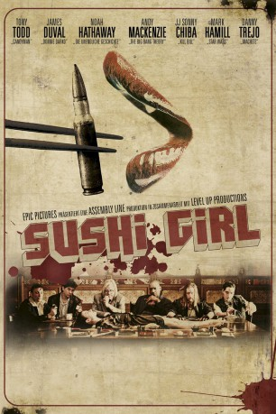
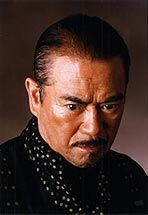
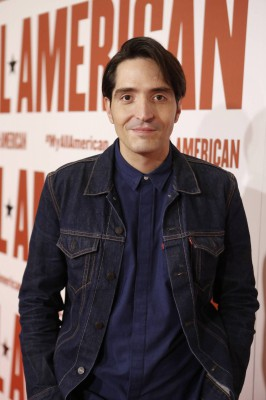

#5714 Sushi Girl
 
 IMDB-Wertung: 6.0 / 10
IMDB-Wertung: 6.0 / 10  Metascore: 0
Metascore: 0 
Für sechs Jahre saß Fish (Noah Hathaway) für einen Raub im Gefängnis. Während der Befragung durch die Polizei und der gesamten Zeit im Knast schwieg er über alle weiteren beteiligten Männer, die an dem schiefgelaufenen Coup beteiligt waren. In der Nacht seiner Freilassung spendieren diese ihm zum Dank ein großzügiges Abendessen. Sushi, serviert auf dem nackten Körper einer schönen Frau, die alles um sich herum gekonnt ignoriert. Als die Männer - knallharte Kerle, mit denen man sich nicht unüberlegt anlegen sollte - das Gespräch jedoch auf die Beute und deren Verbleib lenken, verhärten sich die Fronten zunehmend. Fishs Kollegen unter der Führung des brutalen Duke (Tony Todd) sind sich sicher, dass er die Beute vor seiner Gefangennahme versteckt hat. Je länger der Abend dauert, desto verstörender wird er, bis er schließlich in einem brutalen Gewalt-Exzess endet. Und mittendrin: Die nackte Frau.
Jahr: 2012
Dauer: 98 Minuten
FSK: 18
Land: USA Studio: Phase 4 FilmsTonspuren:
Untertitel:
Auflösung: 720p (1280x536) Größe: 3000 MB
Genre: Thriller, Krimi, Mystery
Regisseur: Kern Saxton
Drehbuch: Jeff Dunham
Soundtrack:
Darsteller:
 Tony Todd als Duke
Tony Todd als Duke- Noah Hathaway als Fish
 James Duval als Francis
James Duval als Francis- Andy Mackenzie als Max
 Mark Hamill als Crow
Mark Hamill als Crow- Cortney Palm als Sushi Girl
-  Shin'ichi Chiba als Sushi Chef
-  David Dastmalchian als Nelson
 Jeff Fahey als Morris
Jeff Fahey als Morris Michael Biehn als Mike
Michael Biehn als Mike Danny Trejo als Schlomo
Danny Trejo als Schlomo- Destin Pfaff als Jude
- Stryker als Ramone
- Cyrus Alexander als Martin
- Rachel Federoff als Female Voice on Phone
- David Reynolds als Henchman
- Neal Fischer als Det. John N. Davenport
- Sean Apple als Det. Harry Caul Jr.
- Suren M. Seron als Correctional Clerk
- Mike M. Quick als Correctional Officer
Datei: X:\FSK18-Eastern\Sushi Girl (2012, FSK18, 1280x536).mkv seit 13.03.2017
Festplatte: FSK18
 Es gibt insgesamt 102 Filme in der Gruppe 'FSK18-Eastern'
Es gibt insgesamt 102 Filme in der Gruppe 'FSK18-Eastern'